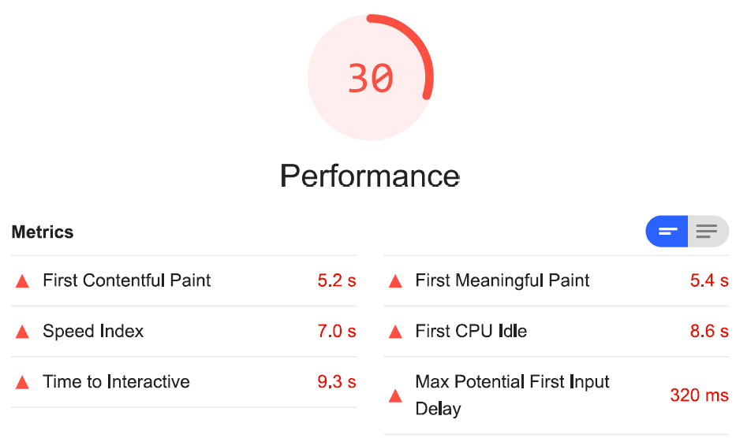
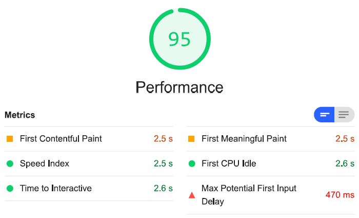
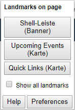

Press "s"
to see everything we said during our presentation

UI5con 2019
Frameworks
Performance Score
98/100
95/100
98/100
Use Case

SAPolis

European Union
React with UI5 Web Components
SAPUI5
Comparison
Documentation
Documentation
SAPUI5
UI5 Web Components
Scope
Scope
SAPUI5 Controls
~600
UI5 Web Components
26
None-Control-Elements
None-Control-Elements
SAPUI5

UI5 Web Components
UI5 Web Components are awesome:
awesomeness
Performance
Performance
Google Lighthouse
| Metric | Weight |
|---|---|
| first-contentful-paint | 3 |
| first-meaningful-paint | 1 |
| first-cpu-idle | 2 |
| interactive | 5 |
| speed-index | 4 |
| estimated-input-latency | 0 |
Performance
Score
SAPUI5
UI5 Web Components
Accessibility
Accessibility
SAPUI5
UI5 Web Components
Accessibility
Accessibility
SAPUI5 Controls ≠ UI5 Web Components
Other striking differences
- Architecture
- Need of CSS
SAPUI5 Controls
+ Documentation
+ Scope
+ Accessibility
UI5 Web Components
+ Flexibility
+ Performance